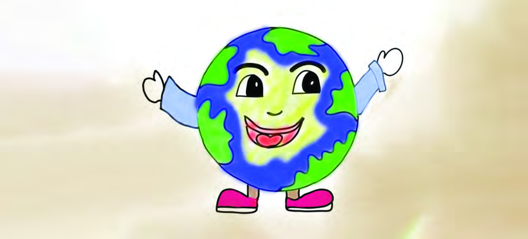
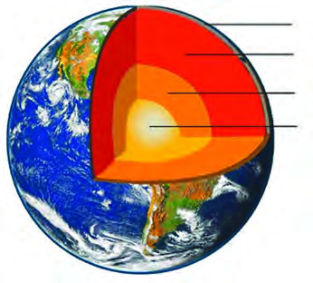
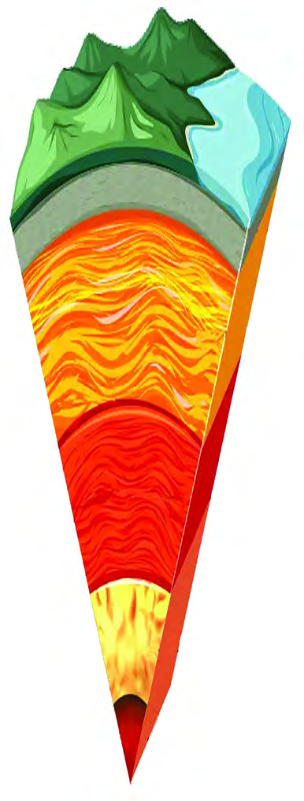
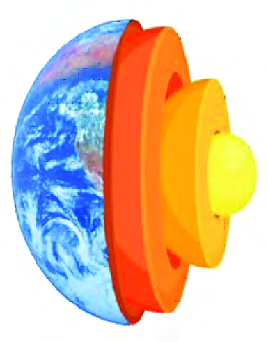
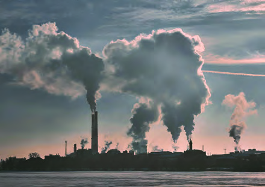
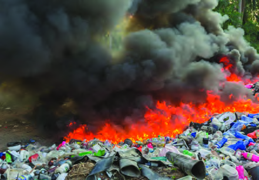
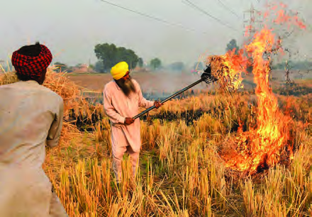
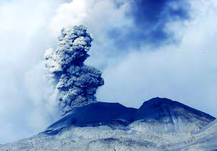
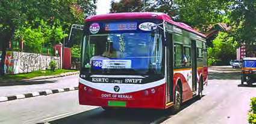
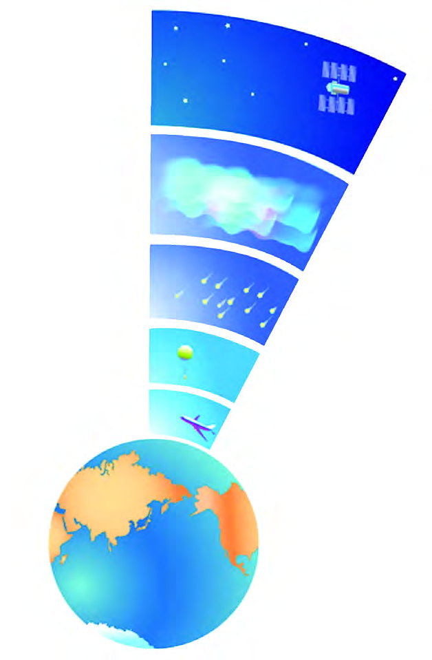

<!DOCTYPE html>
<html lang="en">
<head>
  <meta charset="utf-8">
  <meta name="viewport" content="width=device-width, initial-scale=1.0">
  <title>Pages 68-81 - Class 7 Social science</title>
  <style>

:root {
  --bg-color: #fcfcfd;
  --card-bg: #ffffff;
  --text-color: #1e293b;
  --text-muted: #64748b;
  --primary-color: #0284c7;
  --primary-light: #e0f2fe;
  --border-color: #e2e8f0;
  --radius: 10px;
  --shadow: 0 4px 6px -1px rgb(0 0 0 / 0.05), 0 2px 4px -2px rgb(0 0 0 / 0.05);
}

body {
  font-family: -apple-system, BlinkMacSystemFont, "Segoe UI", Roboto, "Noto Sans Malayalam", "Manjari", "Gayathri", sans-serif;
  background-color: var(--bg-color);
  color: var(--text-color);
  line-height: 1.8;
  font-size: 1.1rem;
  margin: 0;
  padding: 0;
}

.container {
  max-width: 860px;
  margin: 0 auto;
  padding: 2.5rem 1.5rem 5rem 1.5rem;
}

header {
  margin-bottom: 2.5rem;
  padding-bottom: 1.5rem;
  border-bottom: 2px solid var(--border-color);
}

.badge-row {
  display: flex;
  gap: 0.5rem;
  margin-bottom: 0.75rem;
  flex-wrap: wrap;
}

.badge {
  display: inline-block;
  font-size: 0.75rem;
  font-weight: 700;
  text-transform: uppercase;
  letter-spacing: 0.05em;
  padding: 0.25rem 0.65rem;
  border-radius: 9999px;
  background: var(--primary-light);
  color: var(--primary-color);
}

.badge-medium {
  background: #fef3c7;
  color: #b45309;
}

.badge-class {
  background: #dcfce7;
  color: #15803d;
}

h1 {
  font-size: 2.1rem;
  font-weight: 800;
  margin: 0.5rem 0 1rem 0;
  line-height: 1.3;
  color: #0f172a;
}

.nav-bar {
  display: flex;
  justify-content: space-between;
  margin: 1.5rem 0;
  font-size: 0.95rem;
  flex-wrap: wrap;
  gap: 0.5rem;
}

.nav-bar a {
  color: var(--primary-color);
  text-decoration: none;
  font-weight: 600;
  padding: 0.5rem 1rem;
  border-radius: var(--radius);
  background: var(--card-bg);
  border: 1px solid var(--border-color);
  transition: all 0.2s ease;
}

.nav-bar a:hover {
  background: var(--primary-light);
  border-color: var(--primary-color);
}

.nav-bar .disabled {
  color: var(--text-muted);
  pointer-events: none;
  border-color: transparent;
  background: transparent;
}

.page-section {
  background: var(--card-bg);
  border: 1px solid var(--border-color);
  border-radius: var(--radius);
  box-shadow: var(--shadow);
  padding: 2rem;
  margin-bottom: 2.5rem;
}

.page-header {
  display: flex;
  align-items: center;
  justify-content: space-between;
  margin-bottom: 1.25rem;
  padding-bottom: 0.5rem;
  border-bottom: 1px dashed var(--border-color);
}

.page-number {
  font-size: 0.8rem;
  font-weight: 700;
  text-transform: uppercase;
  color: var(--text-muted);
  letter-spacing: 0.05em;
}

.page-content p {
  margin: 0 0 1.25rem 0;
  white-space: pre-wrap;
  word-break: break-word;
}

.page-content p:last-child {
  margin-bottom: 0;
}

.diagram-card {
  margin: 2rem 0;
  text-align: center;
  background: #f8fafc;
  border: 1px solid var(--border-color);
  border-radius: var(--radius);
  padding: 1rem;
  overflow: hidden;
}

.diagram-card img {
  max-width: 100%;
  height: auto;
  border-radius: calc(var(--radius) - 4px);
  display: inline-block;
  box-shadow: 0 2px 4px rgba(0,0,0,0.04);
}

.diagram-card figcaption {
  font-size: 0.85rem;
  color: var(--text-muted);
  margin-top: 0.75rem;
  font-weight: 500;
}

footer {
  margin-top: 3rem;
  padding-top: 2rem;
  border-top: 2px solid var(--border-color);
}

  </style>
</head>
<body>
  <div class="container">
    <header>
      <div class="badge-row">
        <span class="badge badge-class">Class 7</span>
        <span class="badge badge-medium">English Medium</span>
        <span class="badge">Social science</span>
        <span class="badge">Part 1</span>
      </div>
      <h1>Pages 68-81</h1>
      <div class="nav-bar"><a href="part_1_pages_5467.html">← Pages 54-67</a><a href="index.html">☰ Index</a><a href="part_1_pages_8293.html">Pages 82-93 →</a></div>
    </header>
    <main>
<section class="page-section" id="page-68">
  <div class="page-header"><span class="page-number">Page 68</span></div>
  <figure class="diagram-card" id="fig_ch05_p068_01"><figcaption>Figure fig_ch05_p068_01 (Page 68)</figcaption></figure>
  <figure class="diagram-card" id="fig_ch05_p068_02"><figcaption>Figure fig_ch05_p068_02 (Page 68)</figcaption></figure>
  <div class="page-content">
    <p>I am the Earth<br>Billions of years ago, I was a burning sphere. Later on I was cooled in the incessant <br>rain. It again took millions of years for living beings to appear. You know that I am <br>the only one to have life among the planets in the solar system. I have everything to <br>support your life. Air to breath, water to drink and for all other uses, soil for plant <br>growth, and so on.<br>Have you read the monologue of the earth?<br>5<br>Fig. 5.1<br>Our Earth</p>
  </div>
</section>
<section class="page-section" id="page-69">
  <div class="page-header"><span class="page-number">Page 69</span></div>
  <figure class="diagram-card" id="fig_ch05_p069_01"><figcaption>Figure fig_ch05_p069_01 (Page 69)</figcaption></figure>
  <figure class="diagram-card" id="fig_ch05_p069_02"><figcaption>Figure fig_ch05_p069_02 (Page 69)</figcaption></figure>
  <div class="page-content">
    <p>How beautiful is the surface of the earth with its rivers, mountains, valleys and <br>plains! But what about the interior of the earth? Let us explore the inner secrets of <br>the earth. <br>Into the Interior…<br>We are aware of the temperature on the earth’s surface. But it is extreme heat <br>inside the earth. The temperature at the centre of the interior is about 5500 degree <br>Celsius. Do you know that water boils at 100 degree Celsius? Can you imagine the <br>heat of 5500 degree celsius? Have you heard of mines? Do you know how many <br>kilometres deep the deepest mine is? About 12 kilometres! Humans can reach even <br>that far only with the help of machines and safety devices. The distance from the <br>surface to the centre of the earth is about 6371 kilometres. So is it possible for the <br>humans to understand the interior of the earth directly? Then how did we get the <br>information about the interior of the earth? The information regarding the interior <br>of the earth is formed through scientific studies and inferences. Let’s see what they <br>are.<br>l	 By examining materials that reach the Earth’s surface through volcanic <br>eruptions<br>l	 From the information collected from mines<br>l	 By analyzing the motion of waves generated during earthquake<br>The Structure of the Earth<br>Observe the picture (Fig. 5.2).<br>What information do you get about the <br>interior of the Earth? <br>Write your findings below.<br>l	 The interior of the earth is divided <br>into different layers.<br>l	 The outermost layer is the Crust.<br>l	   <br>Didn&#x27;t you recognize the different layers of the earth? By collecting <br>information from the description given and analysing the figure (5.3) <br>prepare a note on the interior of the earth.<br>Crust<br>Mantle<br>Outer Core<br>Inner Core<br>Fig. 5.2<br>69<br>Our Earth</p>
  </div>
</section>
<section class="page-section" id="page-70">
  <div class="page-header"><span class="page-number">Page 70</span></div>
  <figure class="diagram-card" id="fig_ch05_p070_01"><figcaption>Figure fig_ch05_p070_01 (Page 70)</figcaption></figure>
  <div class="page-content">
    <p>The Crust<br>The crust is the outermost and relatively <br>thin layer of the earth. This layer is made <br>up of solid rocks.<br>The crust has two parts namely <br>continental crust and oceanic crust. <br>Continental crust is thicker than the <br>oceanic crust. The average thickness is <br>about 30 kilometres. In mountain areas, <br>continental crust has a thickness of about <br>70 kilometres, but the average thickness <br>of the oceanic crust is 5 kilometres. <br>The Mantle<br>Mantle is the layer below the crust. This <br>is relatively thick. It extends up to about <br>2900 kilometres. <br>The part of the earth that comprises <br>crust and upper part of mantle is <br>called lithosphere. The part below the <br>lithosphere, which is in a molten state <br>due to the melting of rock particles <br>(magma) is known as asthenosphere. <br>The portion below the asthenosphere is <br>in solid state. <br>The Core<br>The layer below the mantle is the core. It <br>is divided into outer core and inner core. <br>The outer core is in liquid state while the <br>inner core is in solid state. The core is <br>mainly made up of metals like Nickel <br>(Ni) and Iron (Fe). Hence the core is also <br>known as NIFE. The temperature in the <br>inner core is about 5500 degree Celsius.<br>Fig. 5.3<br>VII - Part 1<br>Social Science<br>70</p>
  </div>
</section>
<section class="page-section" id="page-71">
  <div class="page-header"><span class="page-number">Page 71</span></div>
  <figure class="diagram-card" id="fig_ch05_p071_01"><figcaption>Figure fig_ch05_p071_01 (Page 71)</figcaption></figure>
  <figure class="diagram-card" id="fig_ch05_p071_02"><figcaption>Figure fig_ch05_p071_02 (Page 71)</figcaption></figure>
  <div class="page-content">
    <p>Complete the given diagram (fig. 5.4) by including the features of <br>each layer of the earth’s interior.<br>Structure of the Earth – Features<br>Crust <br>Outer most layer<br>Known as NIFE<br>The layer up to 2900 <br>km below the crust<br>Mantle<br>Core<br>The features of each layer of the Earth’s interior are given in the table. Draw ‘<br>’ towards the correct ones and ‘ <br> ’ towards the wrong ones.<br>l<br> The crust is the outermost solid part of the earth which is made up <br>of rocks.<br>l Lithosphere is made up of crust and upper mantle.<br>l The asthenosphere is the molten part formed by the molten rock <br>particles (magma) <br>l The outer core is in liquid state<br>l The continental crust and the oceanic crust are the two parts of the <br>crust.<br>l The core is also known as NIFE<br>Fig. 5.4<br>71<br>Our Earth</p>
  </div>
</section>
<section class="page-section" id="page-72">
  <div class="page-header"><span class="page-number">Page 72</span></div>
  <figure class="diagram-card" id="fig_ch05_p072_01"><figcaption>Figure fig_ch05_p072_01 (Page 72)</figcaption></figure>
  <figure class="diagram-card" id="fig_ch05_p072_02"><figcaption>Figure fig_ch05_p072_02 (Page 72)</figcaption></figure>
  <figure class="diagram-card" id="fig_ch05_p072_03"><figcaption>Figure fig_ch05_p072_03 (Page 72)</figcaption></figure>
  <div class="page-content">
    <p>Illustrate the structure of the earth in a chart by giving separate colour <br>for each layer. Write the features and display it in the class. <br>With the title ‘The Interior Features of the Earth’, prepare notes by <br>including additional information.<br>Now you are aware of the basic facts about the earth’s interior. Let us try to <br>understand some facts regarding the atmosphere that surrounds the earth. <br>Earth’s Atmosphere<br>How did the Earth and it&#x27;s atmosphere transform in the way organisms could <br>survive?<br>The Earth which was in a molten hot state at the time of origin, slowly cooled over <br>in billions of years. This process, released the gases inside the earth. <br>Eventually an air cover containing many gases was formed around the earth. This <br>gaseous blanket that covers the earth is known as the atmosphere. With the origin <br>of plants, the atmosphere became rich in oxygen as a result of photosynthesis.<br>Nitrogen, Oxygen, Carbon dioxide etc., are the major gases in the atmosphere. <br>Apart from these, there are other gases, dust particles and water molecules. Let us <br>see the various gases present in the atmosphtere and their composition.<br>Composition of the Atmosphere<br>The presence of atmosphere is there up to an altitude of about ten thousand <br>kilometres from the earth’s surface. But it is estimated that 97% of the total <br>atmospheric air exists up to an altitude of about 29 km above the earth’s surface. <br>As altitude increases, the amount of gases decreases. <br>Oxygen, the life giving gas for humans and other living things, and Carbon dioxide <br>that helps the survival of plants are obtained from the atmosphere. These two gases <br>play a vital role in sustaining life on earth.<br>Apart from Oxygen and Carbon dioxide what are the other gases present <br>in the atmosphere? Observe and findout from the picture (Fig. 5.5) given.<br> <br>VII - Part 1<br>Social Science<br>72</p>
  </div>
</section>
<section class="page-section" id="page-73">
  <div class="page-header"><span class="page-number">Page 73</span></div>
  <figure class="diagram-card" id="fig_ch05_p073_01"><figcaption>Figure fig_ch05_p073_01 (Page 73)</figcaption></figure>
  <div class="page-content">
    <p>Atmospheric gases<br>Fig. 5.5<br>Nitrogen<br>Oxygen<br>Argon<br>Carbon dioxide<br>Neon<br>Helium<br>Krypton<br>Xenon<br>Hydrogen<br>1%<br>Observe figure 5.5 and answer the given questions.<br>l	<br>Which is the most abundant gas present in the atmosphere?<br>l What is the combined percentage of Nitrogen and Oxygen to the total atmospheric <br>composition?<br>The process by which water from the earth’s surface heated by the sun and reaches <br>the atmosphere as vapour is called evaporation. The presence of water vapour in <br>the atmosphere is only up to 90 km from the earth’s surface. <br>Apart from gases and water molecules, dust particles are also part of the atmosphere. <br>Dust particles are usually found in the atmosphere near the earth’s surface. Water <br>vapour condenses around fine dust particles in the atmosphere to form clouds. <br>Hence these fine dust particles in the atmosphere are called Hygroscopic nuclei. <br>Let’s see how dust particles reach the atmosphere.<br>l	<br>Lifted from the earth by wind<br>l	<br>Coming out during volcanic eruptions<br>l	<br>Ash produced during burning of meteors<br>l	<br>     	<br>   <br>See how atmosphere helps in the survival of life on earth.<br>l	<br>Causes atmospheric phenomena <br>l	<br>Protects from harmful sun rays <br>l	<br>  <br>73<br>Our Earth</p>
  </div>
</section>
<section class="page-section" id="page-74">
  <div class="page-header"><span class="page-number">Page 74</span></div>
  <figure class="diagram-card" id="fig_ch05_p074_01"><figcaption>Figure fig_ch05_p074_01 (Page 74)</figcaption></figure>
  <figure class="diagram-card" id="fig_ch05_p074_02"><figcaption>Figure fig_ch05_p074_02 (Page 74)</figcaption></figure>
  <figure class="diagram-card" id="fig_ch05_p074_03"><figcaption>Figure fig_ch05_p074_03 (Page 74)</figcaption></figure>
  <div class="page-content">
    <p>Write down how each of the following factors help to sustain life on <br>the earth.<br>Atmospheric air<br>Water particles in the <br>atmosphere<br>Dust particles in the <br>atmosphere<br>Haven’t you understood how important the atmosphere is for the survival of all <br>living beings? Imagine the situation when the atmosphere gets polluted. <br>How does the atmosphere get polluted?<br>What is the term used to indicate the pollution of atmosphere?<br>The mixing up of smoke, toxic gases and other chemicals in the air that alters the <br>composition of atmosphere is known as atmospheric pollution. <br>Observe the pictures (Fig. 5.6).<br>VII - Part 1<br>Social Science<br>74</p>
  </div>
</section>
<section class="page-section" id="page-75">
  <div class="page-header"><span class="page-number">Page 75</span></div>
  <figure class="diagram-card" id="fig_ch05_p075_01"><figcaption>Figure fig_ch05_p075_01 (Page 75)</figcaption></figure>
  <figure class="diagram-card" id="fig_ch05_p075_02"><figcaption>Figure fig_ch05_p075_02 (Page 75)</figcaption></figure>
  <figure class="diagram-card" id="fig_ch05_p075_03"><figcaption>Figure fig_ch05_p075_03 (Page 75)</figcaption></figure>
  <figure class="diagram-card" id="fig_ch05_p075_04"><figcaption>Figure fig_ch05_p075_04 (Page 75)</figcaption></figure>
  <figure class="diagram-card" id="fig_ch05_p075_05"><figcaption>Figure fig_ch05_p075_05 (Page 75)</figcaption></figure>
  <div class="page-content">
    <p>l	<br>What activities cause atmospheric pollution? List out.<br>l	<br> <br>l	<br> <br>l	<br> <br>What causes an increase in the level of atmospheric pollution in industrial cities?<br>Acid Rain<br>When coal, petroleum fuels, diesel etc. are burnt, many gases such <br>as Carbon dioxide, Carbon monoxide, Sulphur dioxide etc. are <br>released into the atmosphere. In the atmosphere these gases mix <br>with rainwater making it acidic, and reaches the earth as acid rain. <br>If the pH value of rain water is less than 5, it is considered as acid <br>rain. The pH value of pure water is 7.<br>Fig. 5.6<br>75<br>Our Earth</p>
  </div>
</section>
<section class="page-section" id="page-76">
  <div class="page-header"><span class="page-number">Page 76</span></div>
  <figure class="diagram-card" id="fig_ch05_p076_01"><figcaption>Figure fig_ch05_p076_01 (Page 76)</figcaption></figure>
  <figure class="diagram-card" id="fig_ch05_p076_02"><figcaption>Figure fig_ch05_p076_02 (Page 76)</figcaption></figure>
  <figure class="diagram-card" id="fig_ch05_p076_03"><figcaption>Figure fig_ch05_p076_03 (Page 76)</figcaption></figure>
  <figure class="diagram-card" id="fig_ch05_p076_04"><figcaption>Figure fig_ch05_p076_04 (Page 76)</figcaption></figure>
  <figure class="diagram-card" id="fig_ch05_p076_05"><figcaption>Figure fig_ch05_p076_05 (Page 76)</figcaption></figure>
  <figure class="diagram-card" id="fig_ch05_p076_06"><figcaption>Figure fig_ch05_p076_06 (Page 76)</figcaption></figure>
  <div class="page-content">
    <p>Smog is a blend of smoke and fog. <br>Smoke and dust from industries, <br>construction activities, vehicles, <br>burning of agricultural residues <br>etc. fill the atmosphere. These <br>then mix with fog to form smog. <br>Many studies show that air <br>pollution increases the risk of <br>stroke, heart and lung diseases.<br>Smog<br>Fig. 5.7<br>Hope now you know about the ways in which air gets polluted and the harm caused <br>by it. <br>Various Solutions<br>What can we do to reduce atmospheric pollution? Observe the pictures <br>(Fig. 5.8) given below. Write down your findings and present in the <br>class.<br>Fig. 5.8<br>VII - Part 1<br>Social Science<br>76</p>
  </div>
</section>
<section class="page-section" id="page-77">
  <div class="page-header"><span class="page-number">Page 77</span></div>
  <figure class="diagram-card" id="fig_ch05_p077_01"><figcaption>Figure fig_ch05_p077_01 (Page 77)</figcaption></figure>
  <div class="page-content">
    <p>So far we have discussed the composition of the atmosphere. <br>Now let’s see the structure of the atmosphere. <br>Structure of the Atmosphere<br>The atmosphere is classified into five different layers based on temperature <br>conditions. Observe the diagram (Fig. 5.9) given below and list the layers of the <br>atmosphere.<br>Troposphere<br>Stratosphere<br>Mesosphere<br>Thermosphere<br>Exosphere<br>Fig. 5.9<br>77<br>Our Earth</p>
  </div>
</section>
<section class="page-section" id="page-78">
  <div class="page-header"><span class="page-number">Page 78</span></div>
  <figure class="diagram-card" id="fig_ch05_p078_01"><figcaption>Figure fig_ch05_p078_01 (Page 78)</figcaption></figure>
  <div class="page-content">
    <p>Layers of Atmosphere<br>l	<br>Troposphere	<br>l	<br>l	<br>l	<br>	<br>l	<br>Have you identified and listed the layers of the atmosphere? Now let’s understand <br>the features of each of them. <br>Troposphere<br>It’s the lowermost layer of the atmosphere. It has an average height of 13 <br>kilometre from the earth&#x27;s surface. The height ranges about 8 kilometre at the <br>poles to 18 kilometre at the equator. This is because the temperature is high in <br>the equatorial region.  <br>Dust particles and water vapour are most abundant in this layer. Atmospheric <br>phenomena such as cloud formation, rain, snow, wind etc. occurs in this layer.<br>An important feature of troposphere is that the temperature of the atmosphere <br>decreases at the rate of 1 degree Celsius for every 165 metres from the surface <br>of the earth. This is called Normal Lapse Rate.<br>Why the troposphere is called the most important layer of the atmosphere?<br>Why the high altitude regions like Ooty, Munnar, Kodaikanal etc. feel <br>cold?<br>Stratosphere<br>It is the layer of atmosphere just above the troposphere. The average height is <br>about 50 kilometre from the earth’s surface. In the stratosphere, the temperature <br>increases after a specific height. The ozone layer is in the stratosphere. It stands <br>at an altitude of about 25 kilometre from the surface. <br>Ozone – Earth’s Shield<br>The presence of ozone gas in the atmosphere protects the earth by blocking the <br>harmful ultraviolet rays from the sun. If ultraviolet rays reach the earth&#x27;s surface at <br>an increased rate, it is harmful to living organisms and ecosystems.<br>VII - Part 1<br>Social Science<br>78</p>
  </div>
</section>
<section class="page-section" id="page-79">
  <div class="page-header"><span class="page-number">Page 79</span></div>
  <figure class="diagram-card" id="fig_ch05_p079_01"><figcaption>Figure fig_ch05_p079_01 (Page 79)</figcaption></figure>
  <figure class="diagram-card" id="fig_ch05_p079_02"><figcaption>Figure fig_ch05_p079_02 (Page 79)</figcaption></figure>
  <div class="page-content">
    <p>What harm does ultraviolet rays cause on the Earth?<br>Collapse of the food chain<br>Crop damage<br>Stunting of plant growth<br>Early aging<br>Blindness, Cataract<br>Skin cancer<br>Harm that <br>Ultraviolet rays <br>can create<br>Ozone day<br>September 16 is observed as World Ozone Day. The objective behind <br>observing this day is to create awareness among people about the <br>need to protect ozone layer and to control the use of products that can <br>cause ozone depletion.<br>What activities can be done in class and school on ozone day? <br>Discuss.<br> Mesosphere<br>This atmospheric layer extends from about 50 kilometre to 80 kilometre above <br>stratosphere. The phenomenon of decrease in temperature with the increase <br>in height is present in this layer also. At an altitude of about 80 kilometre <br>from the surface, the temperature drops to -100 degree Celsius. The lowest <br>temperature in the atmosphere is experienced here. Most of the meteors that <br>enter the Earth’s atmosphere burn down in this layer.<br>79<br>Our Earth</p>
  </div>
</section>
<section class="page-section" id="page-80">
  <div class="page-header"><span class="page-number">Page 80</span></div>
  <figure class="diagram-card" id="fig_ch05_p080_01"><figcaption>Figure fig_ch05_p080_01 (Page 80)</figcaption></figure>
  <figure class="diagram-card" id="fig_ch05_p080_02"><figcaption>Figure fig_ch05_p080_02 (Page 80)</figcaption></figure>
  <div class="page-content">
    <p>Thermosphere<br>The thermosphere is the layer of atmosphere that lies about 80 to 400 kilometre <br>above the mesosphere. The temperature increases with an increase in altitude. <br>The lower part of the thermosphere is called the Ionosphere.<br>Ionosphere<br>At an altitude of about 80 to 400 kilometre in the atmosphere, <br>intense solar radiation such as ultraviolet, X rays etc., converts the <br>gas molecules into ions. This process is called ionization and the <br>region where this process takes place is called the Ionosphere. Ions <br>can conduct electricity. Radio waves are electromagnetic waves. <br>Therefore, this region enables long distance transmission of radio <br>waves.<br>Exosphere<br>It is the uppermost layer of the atmosphere. The presence of air molecules in <br>the exosphere, which lies above 400 kilometre from the surface, gradually <br>decreases and the layer becomes a part of the outer space. <br>Prepare identity cards as in the model given below by including the <br>characteristics of the earth’s atmosphere. <br>Name of the atmospheric layer<br>................................................................................................<br>l	Altitude from the earth’s surface<br>l	The change in temperature<br>l	Other features<br>VII - Part 1<br>Social Science<br>80</p>
  </div>
</section>
<section class="page-section" id="page-81">
  <div class="page-header"><span class="page-number">Page 81</span></div>
  <figure class="diagram-card" id="fig_ch05_p081_01"><figcaption>Figure fig_ch05_p081_01 (Page 81)</figcaption></figure>
  <figure class="diagram-card" id="fig_ch05_p081_02"><figcaption>Figure fig_ch05_p081_02 (Page 81)</figcaption></figure>
  <div class="page-content">
    <p>The atmospheric layers and their features are given below.<br>Match them correctly.<br>l	<br>Temperature increases with increase in <br>altitude<br>l	<br>The layer with the lowest temperature<br>l	<br>The layer where meteors burn to ash<br>l	<br>Air molecules gradually reduce and <br>dissolve into space<br>l	<br>The layer in which temperature decreases <br>at a certain rate according to the increase <br>in height<br>l	<br>Zone where ozone is present<br>l	<br>Located at an altitude of 80 to 400 <br>kilometre <br>Exosphere<br>Thermosphere<br>Mesosphere<br>Stratosphere<br>Troposphere<br>We have discussed the earth’s interior, atmosphere, atmospheric layers and their <br>characteristics in detail. Atmospheric and terrestrial features play a crucial role in <br>enabling the survival of flora and fauna on the earth. <br>Extended Activities<br>l	<br>Prepare a model of the earth&#x27;s structure and display it in the Social Science <br>lab. <br>l	<br>With the help of internet, prepare slides and explain the structure and features <br>of the Earth.<br>l	<br>Prepare an essay on atmospheric structure and its features and present it in the <br>class.<br>81<br>Our Earth</p>
  </div>
</section>
    </main>
    <footer>
      <div class="nav-bar"><a href="part_1_pages_5467.html">← Pages 54-67</a><a href="index.html">☰ Index</a><a href="part_1_pages_8293.html">Pages 82-93 →</a></div>
    </footer>
  </div>
</body>
</html>
